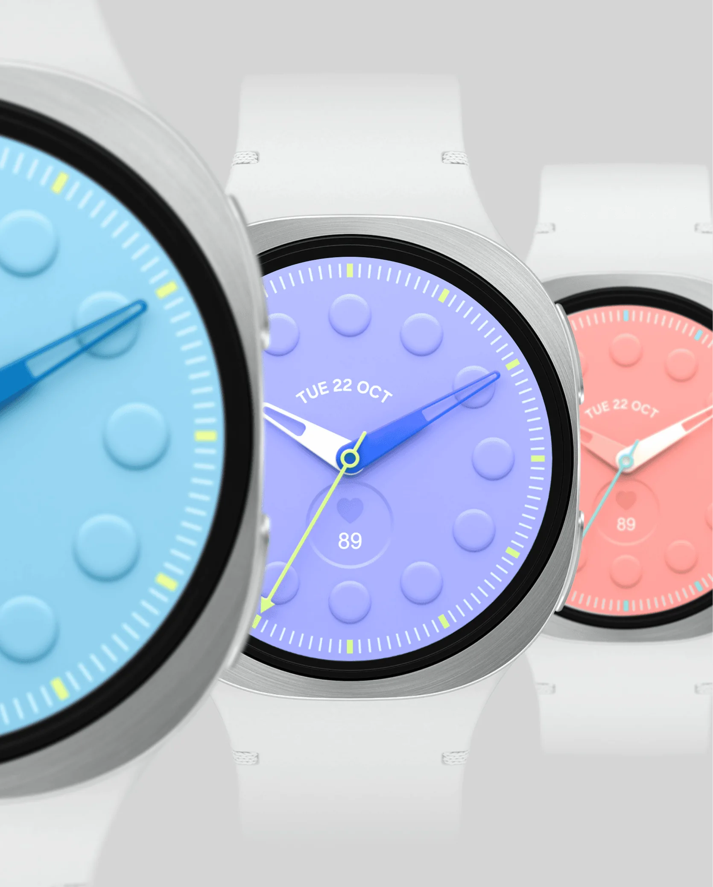
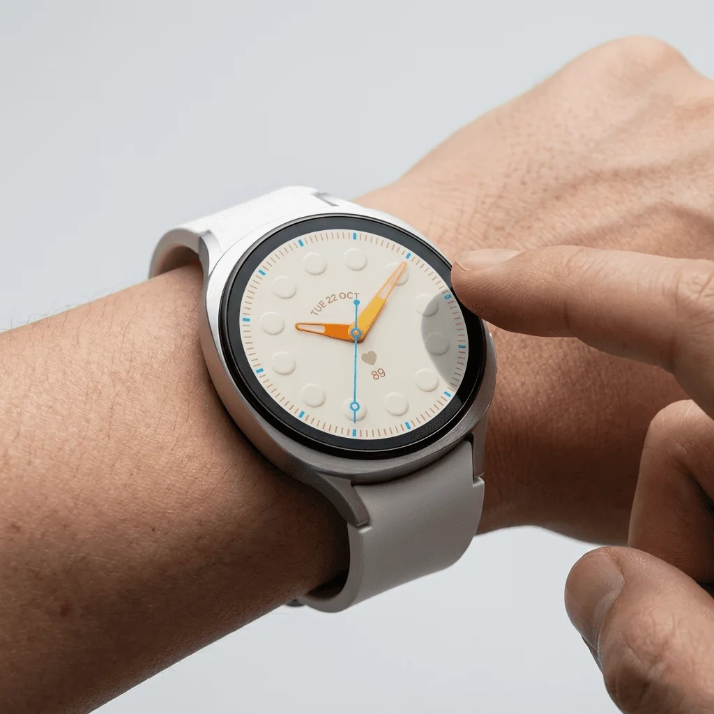
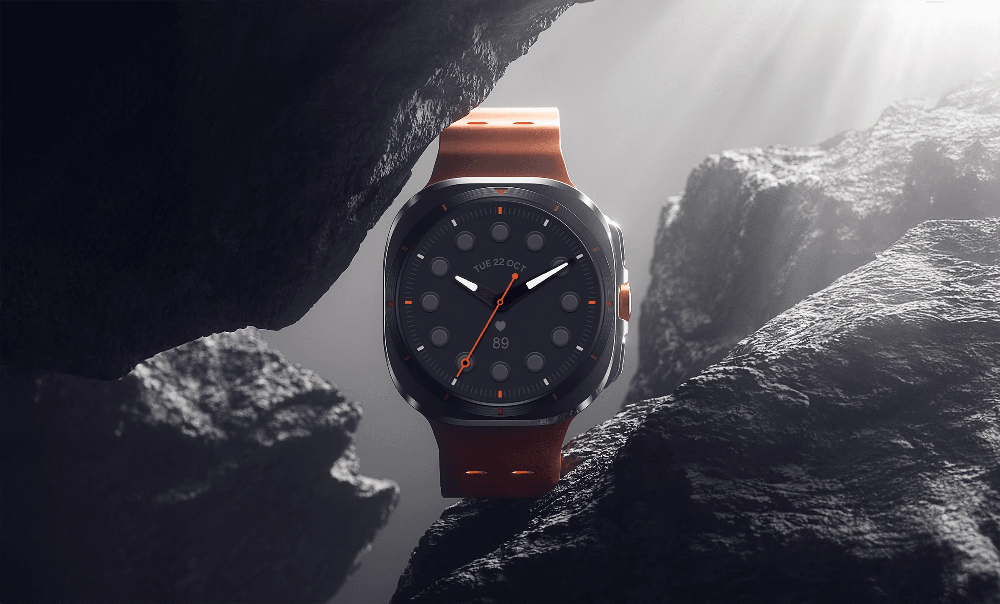
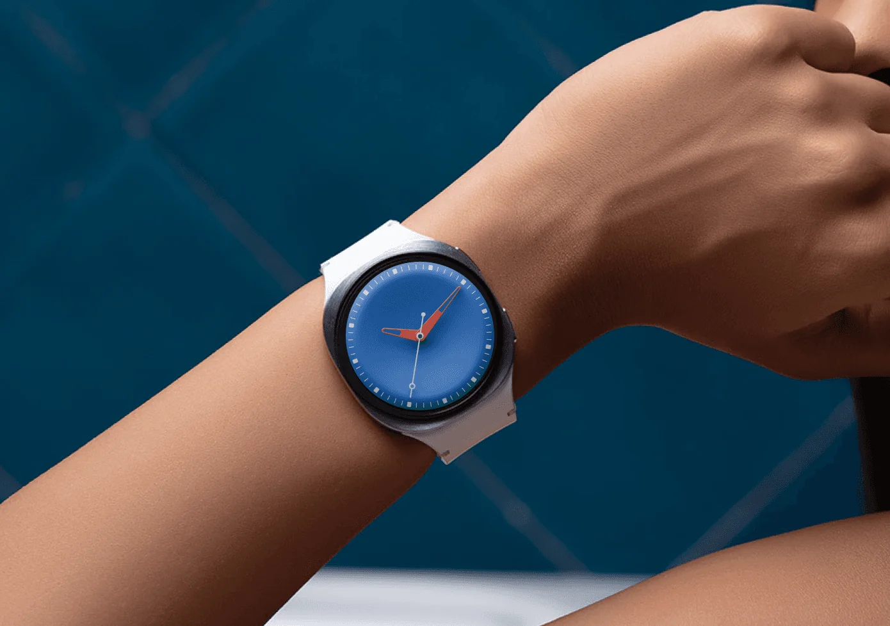
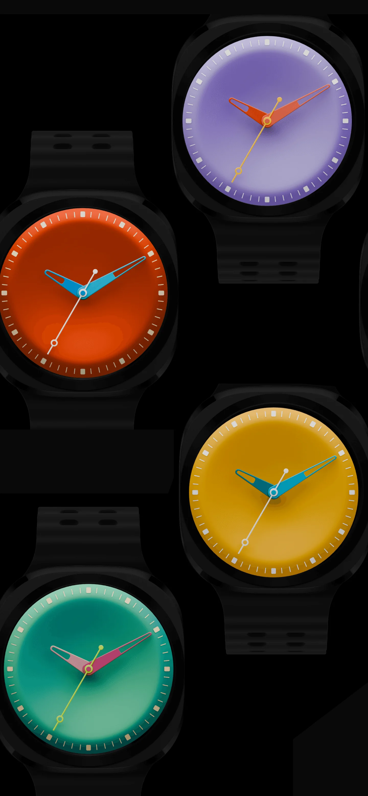
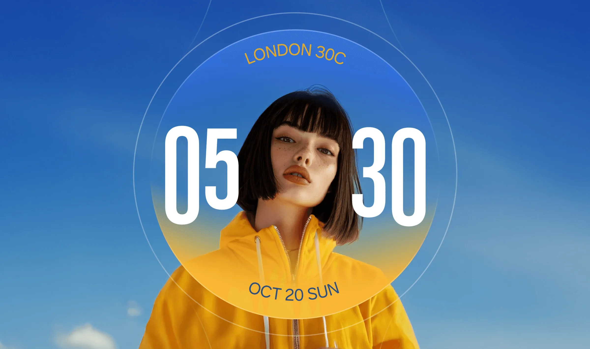
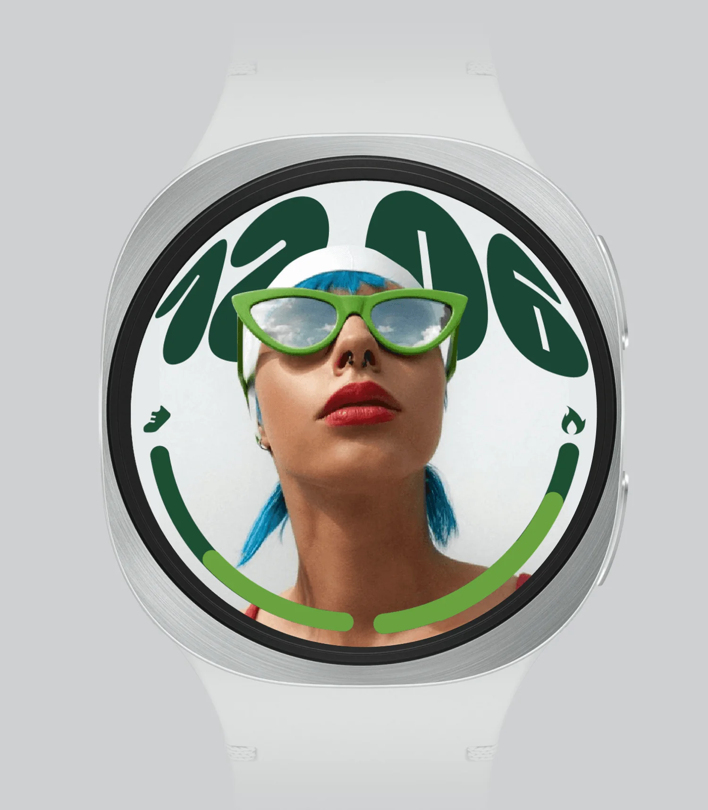
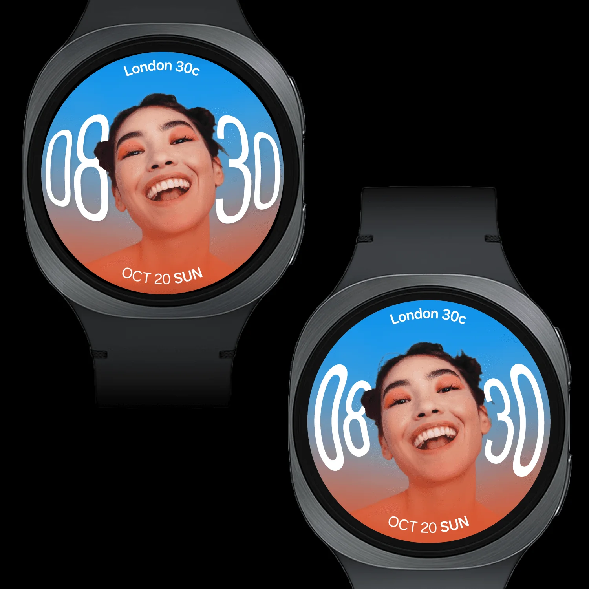

Samsung Design Delhi
Watch Face Visual Explorations
Research & visual direction setting · 2024
The brief had two parts. For analogue faces: take inspiration from traditional watches and understand what gives them their art-deco character, beyond the physical craftsmanship. For personalised photo faces: create a dynamic, expressive photo gallery that also tells the time.
The research was done as a team of four. The four watch faces shown here were designed end to end by me.
01
Pop Analogue
Today’s smartwatch faces are mostly static or purely informational. That leaves a gap in emotional and sensory engagement for people used to responsive, interactive interfaces. The challenge was to close that gap with a watch face that still works within the technical limitations.



02
Pop Demure
A reductive approach, focusing on the form of the base and the hands to give the face an iconic character.


03
Simple Photo
Yet today, photo faces are static images with the time laid on top. This exploration reimagines the photo watch face as personal, contextual and emotionally attuned.
The main question was how to celebrate the round screen: composing a portrait cleanly with the time and other complications, while staying recognisably on-brand.


04
Fish Eye
It started with a simple question: how can a distinctive visual treatment build a strong brand association while suiting the medium and its purpose? This direction was shortlisted to appeal to younger users.

